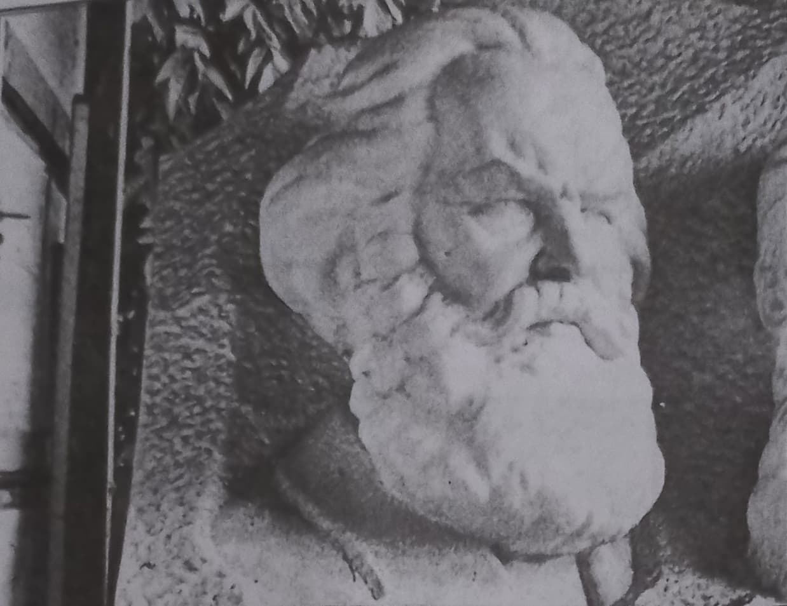
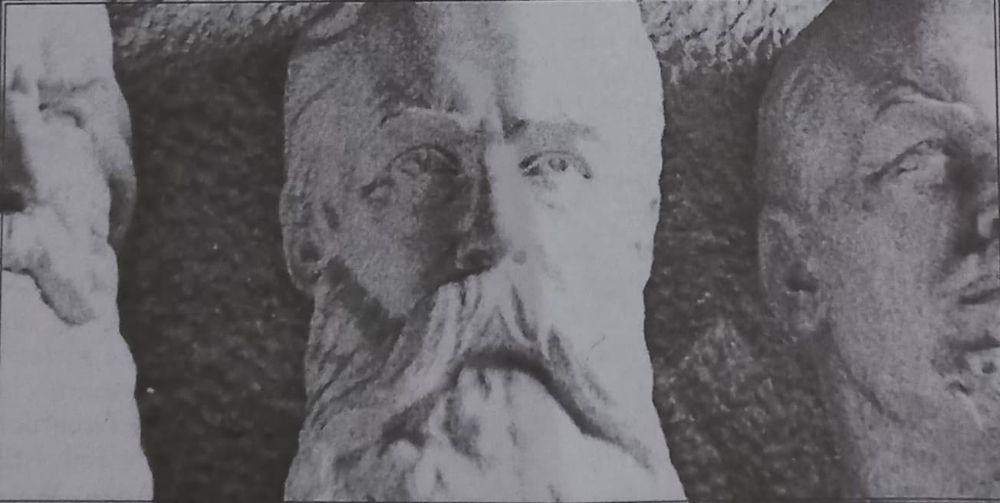
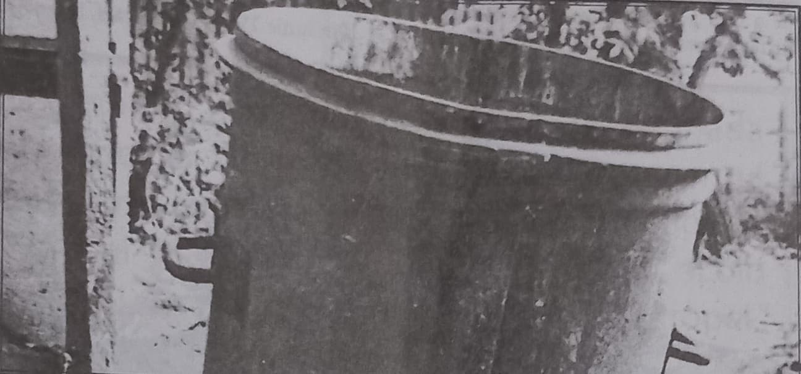
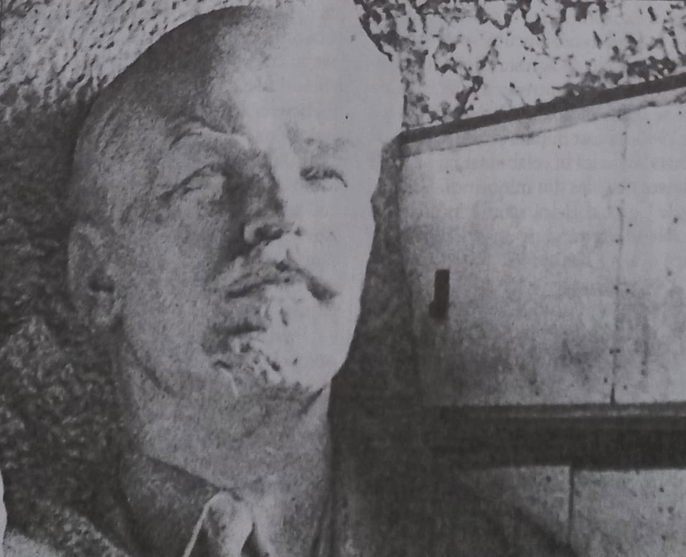

În mass-media, apar din când in când emisiuni sau articole pe tema „agenți sovietici în România”. Și află publicul de tot felul de posesori de nume ce par foarte rusești, dar ce nu i se spune este că majoritatea lor au fost… evrei. Iată câteva citate interesante, menite a înțelege mai bine grozăvia în întregul ei:
Jewish Chronicle, Londra, 4 aprilie 1919:
„Concepțiile bolșevice sunt în majoritatea punctelor în armonie cu ideea de iudaism.”
La acea dată, 477 din cei 545 de oficialități bolșevice erau evrei.
Winston Churchill, Illustrated Sunday Herald, 8 februarie 1920:
Din zilele lui Weishaupt, Karl Marx, Trotski, Bela Kubn, Rosa Luxemburg și Ema Goldman, conspirația acestei lumi a luat amploare. Această conspirație a jucat un rol cunoscut în Revoluția Franceză. A fost izvorul fiecărei mișcări subversive în secolul 19. Și acum, în sfârșit, această bandă de personalități extraordinare din lumea interlopă a marilor orașe din Europa și America i-a tras de păr pe ruși și au devenit conducătorii acelui enorm imperiu.”
Walther Rathenau, 24 decembrie 1921, în Wiener Freie Presse:
„Trei sute de oameni foarte apropiați între ei ghidează mereu destinele economice ale continentelor și tot ei decid cine le sunt succesorii.”
Personajul, (1867-1922) a fost un evreu, politician, scriitor, ministru de externe în timpul Weimar Republic. Fiul lui Emil Rathenau, a avut legături strânse cu masoneria. Lider industriaș în vechiul imperiu german și noua republică. Unul din fondatorii German Democratic Party. În 1921 devine ministru al reconstrucției și în 1922 ministru de externe. Insistența sa ca Germania să accepte integral obligațiile Treaty of Versailles, precum și Treaty of Rapallo cu Uniunea Sovietică, i-au înfuriat pe naționaliști.
Vladimir Lenin, în culmea gloriei sale fiind, spunea totuși:
„Statul nu funcționează așa cum ne-am dorit. Mașinăria nu se supene. Se vede un om la volan și pare că o conduce, dar mașina nu merge în direcția voită de el. Se mișcă însă după dorința altor forțe.”
De fapt, mașinăria se mișcă după cum doreau ELITELE. Nici nu se putea altfel… Să ne amintim că Leon Trotsky (Lev Davidovich Bronstein, 1879-1940), evreu, revoluționar rus, teoretician marxist, lider al revoluției din octombrie, al doilea după Lenin, este cel ce după o vizită în SUA la greii cămătăriei planetare, se întoarce cu sume enorme de bani pentru finanțarea bolșevismului.
De chestiunile acestea nu se vorbește de azi de ieri. Să ne amintim de exemplu de Louis Thomas McFadden (1876-1936), Chairman al United States House Committee on Banking and Currency 1920-1931. Iată o mostră din discursul său anti ELITE din perioada triumfului nazist din Germania:
„După primul război mondial Germania a căzut în mâinile bancherilor internaționali care acum o conduc și o aprovizionează, dar o și imobilizează. I-au cumpărat industria, i-au luat resursele, îi controlează industria și utilitățile publice.
Bancherii internaționali subvenționează actualul guvern al Germaniei și de asemenea aprovizionează fiecare dolar din banii pe care Adolf Hitler i-a folosit în campania sa risipitoare. Prin intermediul Federal Reserve Board peste 30 de miliarde dolari din banii americanilor au fost pompați spre Germania. Cu toții ați auzit de cheltuielile ce au loc în Germania: locuințe moderniste, marele ei planetarium, sălile ei de gimnastică, bazinele de înot, autostrăzile ei, fabricile ei perfecte. Toate acestea au fost făcute cu banii noștri. Toate acestea au fost dăruite Germaniei prin intermediul Federal Reserve Board.
Federal Reserve Board a pompat atât de multe miliarde de dolari spre Germania, încât nici nu îndrăznesc să spună suma totală.”
Tot el acuza bancherii de pe Wall Street că au subvenționat revoluția bolșevică prin intermediul Federal Reserve Board ți că au cauzat deliberat Marea Depresie. A plătit însă pentru lupta sa. Odată s-a tras asupra lui, iar mai apoi a fost otrăvit.
Să vedem cine sunt personajele (toți evrei) enumerate de Winston Churchill plus încă altele:
Adam Weishaupt
La 1 mai 1776, sub conducerea lui Mayer Amschel Rothschild (în traducere SCUTUL ROȘU -— înainte chemându-l Mayer Amschel Bauer, dar și-a schimbat numele în mod special pentru ce avea în plan să facă), cu sprijinul altor familii de evrei germani bogați - Wessely, Moses, Mendelsson - și a unor bancheri (Itzig, Friedlander) -, Weishaupt fondează în secret societatea „Vechii căutători de lumină din Bavaria”, care va deveni mai cunoscută sub denumirea „Ordinul Iluminaților”. Weishaupt a susținut că numele provenea din vechi scrieri și însemna „cei care dețin lumina”.
Primul profet al „Ordinului”, cel care întocmise o doctrină de la care mai târziu s-au inspirat alte societăți secrete influente - „Carbonarii” lui Giuseppe Mazzini, „Liga Drepților” lui Karl Marx sau „Decembriștii” lui Cernisevski - a fost Adam Weishaupt, din acest punct de vedere poate cel mai influent om al secolului XIX. Doctrina lui, Novus Ordo Seclorum, a supraviețuit veacului și a schimbat lumea în secolul XX.
- Abolirea monarhiei și a oricărei puteri ordonate;
- Abolirea proprietății private;
- Abolirea moștenitorilor;
- Abolirea patriotismului;
- Abolirea familiei (a căsniciei și instruirea în comun a copiilor);
- Abolirea creștinismului.
Între 16 iulie și 29 august 1782, la Wilhelmsbaden a avut loc al doilea Congres Masonic, sub președinția baronului de Braunswick. Congresul de la Wilhelmsbaden a încercat să facă o conciliere între diverse secte francmasonice: rosicrucieni, necromanți, cabaliști si umanitariști. La Congres a fost prezent și Adam Weishaupt, care a reușit să fuzioneze Ordinul Iluminaților cu masonii din lojile engleze și franceze. Congresul mai este important și pentru că a coincis cu emanciparea evreilor din Imperiul Habsburgic. Totodată, a fost pus la punct în mare secret planul Revoluției franceze care se va declanșa șapte ani mai târziu. Contele de Virieu, un mason care a participat la congresul secret de la Wilhelmsbaden, i-a dezvăluit ulterior unui prieten: „Nu pot să-ți spun ce s-a hotărât acolo. Pot doar să-ți spun că este mult mai grav decât îți închipui tu. Conspirația care s-a pus în mișcare la Wilbelmsbaden este atât de perfect organizată, încât nu au scăpare nici monarhia, nici biserica.”
Alexander Berkman
Alexander Berkman (1870-1936), evreu, Rusia și SUA, scriitor, lider al mișcărilor anarhiste de la sfârșitul sec. 19 și începutul sec. 20. Iubitul lui Emma Goldman. Între 1908 și 1915 a contribuit la ziarul ei: Mother Earth.
Între 1916 și 1917 publică propriul jurnal anarhist The Blast. Amândoi au fost suporteri ai revoluției bolșevice.
Kurt Eisner
Kurt Eisner (1867-1919), evreu, politician german și jurnalist. În 1917 se alătură Independent Social Democratic Party of Germany. În 1918 este închis pentru 9 luni datorită rolului pe cate l-a jucat în incitarea lucrătorilor din armament la grevă. A organizat Socialist Revolution în Germania distrusă după primul război mondial, declarând Bavaria republică independentă, Bavarian Soviet Republic, el devenind în 1918 premier al ei. În 1919 este asasinat.
Emma Goldman
Emma Goldman (1969-1940), evreică, activistă anarhistă, oratoare, o avocată a revoluțiilor criminale și violente.
A fost de câteva ori închisă pentru distribuire ilegală de informații despre avort. În 1906 fondează jurnalul anarhist Mother Earth. A promovat ateismul, iubirea liberă (a fost e critică acerbă împotriva căsătoriei pe care o vedea ca pe e formă de sclavie), homosexualitatea, controlul nașterilor. L-a inspirat pe Roger Baldwin, unul din fondatorii American Civil Liberties Union. A reprezentat un idol mai târziu, în anii 1970, al mișcărilor feministe.
Iubita lui Alexander Berkman, a fost o susținătoare înfocată a revoluției bolșevice. De asemenea a participat la războiul civil din Spania.
Tot ea a fost amică cu Margaret Sanger.
Moses Hess
Moses (Moshe) Hess (1812-1875), evreu, filosof, unul din fondatorii socialismului și un precursor al Zionism-ului. A promovat o integrare a tuturor evreilor într-o mișcare socialistă universală. Prieten și colaborator cu Karl Marx si Friedrich Engels, l-a convertit pe ultimul la comunism și l-a pregătit pe primul în problemele sociale și economice. Este de fapt creatorul materialismului dialectic marxist și a multor sloganuri și idei atribuite mai apoi lui Marx.
Hess interpreta istoria ca pe o ciclicitate a raselor și a conflictelor sociale.
Leo Jogiches
Leon(n) Jogiches (1867-1919), evreu, cunoscut și sub numele de Leon Tyszka, revoluționar marxist activ în Lituania, Polonia, Germania.
A fost unul din fondatorii Spartacus League (alături de Luxemburg și Karl Liebknecht, denumirea ligii venea de la porecla lui Adam Weishaupt), activă în Germania încă de la începutul primului război mondial și care a condus la communist revolution. După înfrângerea revoluției Luxemburg și Liebknecht sunt asasinați. Jogiches este omorât și el în timp ce încerca să investigheze uciderea celor doi.
Liga, inițial organizație a Social Democratic Party of Germany, în 1919 devine Communist Party of Germany.
Gustav Landauer
Gustav Landauer (1870-1919), evreu, unul din cei mai importanți teoreticieni ai anarhismului din Germania sfârșitului secolului 19 și începutul secolului 20. A fost un avocat al anarhismului comunist și un auto declarat pacifist(?!).
Atacă creștinismul, iudaismul și islamismul, declarându-se în favoarea budhismului.
Paul Levi
Paul Levi (1883-1930), evreu, politician comunist german. În 1906 se alătură Social Democratic Party of Germany (SPD) de partea lui Rosa Luxemburg și Karl Liebknecht. A fost avocatul primeia.
În 1916, are legături apropiate cu Karl Radek și Vladimir Lenin. Unul din liderii Spartacist League în 1918, de curând a devenit Communist Party of Germany (KPD). A condus delegația germană la al doilea congres Comintern la Moscova în 1920. În 1921 critică partidul, este expulzat și în 1922 se alătură Independent Social Democratic Party of Germany (USPD). Mai târziu se realătură Social Democratic Party. Moare în 1930 căzând de la fereastra sa în circumstanțe neclare.
Eugen Leviné
Eugen Leviné (1883-1919), evreu, revoluționar comunist, lider în Bavarian Soviet Republic.
La sfârșitul războiului se alătură Communist Party of Germany. După asasinarea lui Kurt Eisner, devine lider al Independent Social Democratic Party of Germany (USPD). Sub comanda sa gărzile roșii au persecutat pe cei considerați ostili regimului. Când președintele Germaniei Friedrich Ebert a ordonat cucerirea republicii sovietice instaurate în partea bavareză a teritoriului german, gărzile roșii au executat opt ostatici.
Karl Liebknecht
Karl Liebknecht (1871-1919), evreu, socialist german, cofondator al Spartacist League și Communist Party of Germany.
La finele anului 1914, împreună cu Rosa Luxemburg, Leo Jogiches, Paul Levi, Ernest Meyer, Franz Mehring și Clara Zetkin fondează Spartacist League. Scot publicația Spartakusbriefe (Scrisoarea Spartacus) care va fi curând declarată ilegală. Este arestat și trimis să lupte pe frontul de est, unde se îmbolnăvește și se întoarce în Germania în 1915.
În 1918 publică ziarul partidului Rote Fahne (steagul roșu). Participă la revolta din Berlin (31 decembrie 1918 - 1 ianuarie 1919) împreună cu Luxemburg, Leo Jogiches și Clara Zetkin. Este ucis.
Rosa Luxemburg
Rosa Luxemburg (1870-1919), evreică, născută în Polonia, activă în Germania, teoreticiană marxistă, filozoafă socialistă, revoluționară a Social Democracy of the Kingdom of Poland and Lithuania, SPD, Independent Social Democratic Party și Communist Party of Germany.
În 1914 cofondează împreună cu Karl Liebknecht, Spartakusbund (Spartacist League), care la 1 ianuarie va deveni Communist Party of Germany. În 1918, în timpul German Revolution, fondează The Red Flag, ziar central revoluționar de stânga. După revolta din 1919 este ucisă.

Karl Marx
Karl Heinrich Marx (1818-1883), evreu, Germania, celebrul filosof, sociolog, teoretician politic, revoluționar, idol al comunismului. S-a căsătorit cu o rudă a lui Nathan Mayer (1777-1836) - fondatorul Rothschild banking family of England.
Karl Marx a fost mason, s-a tras dintr-o familie de rabini, dar nici el și nici Engels n-au inventat comunismul. Ei au fost influențați direct de evreul Moses (Moshe) Hess (1812-1875) care a fost și unul din fondatorii socialismului.
Citat Karl Marx:
„Aburi infernali se ridică și umplu creierul, / Până când înnebunesc și inima mi se schimbă cu desăvârșire, / Vezi această sabie? / Prințul întunericului mi-a vândut-o. / Pentru mine el este cel care măsoară timpul și dă semnalul, / Cu tot mai multă îndrăzneală interpretez dansul morții.”
Tot el mai scria că instrumentele de tortută sunt bune deoarece asigură locuri de muncă, atât fierarilor cât și călăilor.

Erich Mühsam
Erich Mühsam (1878-1934), evreu, anarhist german, scriitor, poet, dramaturg. Unul din liderii agitatori pentru crearea Bavarian Soviet Republic. În timpul Weimar Republic (1919-1933) era foarte cunoscut pentru satirele la adresa lui Adolf Hitler și condamnarea nazismului.
Karl Radek
Karl Berngardovich Radek (1885-1939), evreu, activist în mișcările socialiste din Polonia și Germania înainte de primul război mondial. Lider comunist după revoluția rusă.
Așadar, vorbim despre revoluție comunistă la nivel planetar, iar mai sus v-am prezentat câteva detalii despre câțiva din stâlpii săi. De fapt, putem spune că de la revoluția franceză și până în zilele noastre, întreaga planetă tot într-o revoluție o ține, doar că din când în când aceasta se manifestă local la modul teribil și i se dau astfel diferire denumiri: bolșevică, bavareză, ungară, din Spania, etc.
Sunt foarte importante de știut toate acestea, căci încă ni se servește o mare minciună. Tot auzim vorbindu-se despre Stalin, Cheka, NKVD, KGB, de parcă acestea au apărut brusc și de nicăieri și s-au apucat să exporte prin agenți-spioni ruși comunismul pe întreaga planetă. Astfel, încă se îndoctrinează mentalul maselor cu falsul: rău = Rusia = comunism, diametral opus lui bun = occident = capitalism.
Știind cum stau de fapt lucrurile, înțelegem atunci de unde URA. De ce Piteștiul, de ce Siberia, de ce moartea prin înfometare a milioane de ucrainieni, etc. Pe de altă parte, înțelegem de ce antinaționalismul, de ce internaționalismul, de ce când se strigă pace, trebuie să re pregătești de război, de ce când se strigă egalitate, trebuie să înțelegi că aceasta este pentru masele conduse. Și cel mai important, înțelegem prigoana teribilă împotriva creștinismului.
Aproape mereu când se discută în mass-media despre comunismul din România, nu se fac referiri la un foarte important personaj:
Silviu Brucan
Saul Bruckner (1916-2006), evreu, în septembrie 1944 este numit secretar general la „Scânteia”, declanșând cu timpul o acerbă campanie pentru încarcerarea politicienilor Iuliu Maniu, Gheorghe I. Brătianu și Corneliu Coposu. De asemenea a cerut pedeapsa cu moartea a anticomuniștilor Radu Gyr și Pamfil Șeicaru.
Soția sa, stalinista Alexandra Sidorovici, a devenit procuroare la Tribunalul Poporului, calitate în care a cerut multe condamnări la moarte.
Brucan a mai fost și profesor de jurnalism la Universitatea din București. De asemenea ambasador în SUA în 1955 și la Națiunile Unite, între 1959-1962. În martie 1989 a scris „scrisoarea celor șase”, semnată mai apoi de Gheorghe Apostol, Alexandru Bârlădeanu, Grigore Răceanu, Corneliu Mănescu și Constantin Pîrvulescu, citită la Radio Europa Liberă și Vocea Americii. Dictatura ceaușistă n-a prea avut efecte asupra sa, plimbându-se ca vodă prin lobodă între Moscova și Washington și pregătind terenul. Un apropiat al ELITELOR planetare.
În legătură cu evenimentele din decembrie 1989 declara:
„Am știut când vine trenul, am stat pe peron și l-am luat.”
A insistat ca soții Ceaușescu să fie omorâți în zi Sfântă de Crăciun. Spre sfârșitul anilor 1990 avea emisiunea Profeții despre trecut la ProTv (patroni familia de evrei Lauder). De asemenea mai avea o rubrică la Ziarul Financiar.
Se vorbește puțin despre el, din aceleași considerente pentru care se vorbește foarte puțin de personajele pe care vi le-am prezentat mai sus în acest articol. Cu alte cuvinte, la nivel local se îndoctrinează masele cu un fals conflict: rău = comunism = Iliescu = Rusia la care se opune actualmente bun = anticomuniștii = Băsescu și intelectualitatea marca George Soros = SUA. Și se duc astfel masele la vot și tot îi aleg pe unii sau pe alții, nefăcând altceva decât să rotească marionetele ELITELOR planetare la guvernare. Căci asta de fapt sunt atât băsescienii cât și iliescienii: o unitate în diversitate.
Trebuie să înțelegem că ceea ce s-a petrecut în trecut, n-au fost decât repetiții a ceea ce se dorește să fie!
CHINA, sinistru laborator al NOII ORDINI MONDIALE
David Rockefeller, august 1973, New York Times:
„Experimentul social din China lui Mao este unul din cele mai importante și de succes din istorie.”
Vom urmări în acest articol „drumul atent ghidat al Chinei de la forma statală cu conducere imperială până la comunism. Este important deoarece sunt voci ce consideră acea țară ca pe un gigant de sine stătător, un soi de forță ce se opune PĂPUȘARILOR din occident. Îl consider util deoarece întreaga planetă se îndreaptă spre o GUVERNARE MONDIALĂ de STÂNGA și de aceea este bine să cunoaștem implicarea determinantă a ELITELOR în istoria acelui stat. Aceleași ELITE ce se preocupă acum de instaurarea NOII ORDINI MONDIALE…
Știm că Sun Yat-sen (1866-1925) a fost un lider politic și revoluționar chinez, considerat „tatăl Chinei moderne”, că a jucat un rol determinant în colapsul dinastiei Qing din 1911 și că a fost primul președinte al Republicii Chineze în 1912. Dar se vorbește mai rar despre „umbra” și sfătuitorul său, cel ce figura a-i fi aghiotant: Morris Abraham «Two-Gun» Cohen (1887-1970), evreu ce la un moment dat devine general-maior în armata chineză. După moartea lui Sun continuă colaborarea cu fiul acestuia, prim ministrul Sun Fo (1891-1973). De asemenea, cu cumnatul lui Sun, puternicul bancher Tse-ven Soong (1894-1971), fost guvernator Central Bank of China, ministru de finanțe (1926-1931, 1932-1933), ministru al afacerilor externe (1942-1945).
Acesta este doar un exemplu. Dezvoltarea modernă a extremului orient a avut o importanță deosebită pentru ELITELE planetare. Voi detalia într-un alt articol influența lor decisivă asupra Japoniei și a zonei în perioada sfârșitului de secol 19 - început de secol 20. Desigur că o problemă atât de amplă nu stătea doar pe umerii câtorva personalități, chiar foarte influente. De aceea s-au pus în mișcare organizații puternice și foarte bine finanțate:
Institute of Pacific Relations (IPR)
A fost creată în 1925 ca un soi de forum de discuții al problemelor și relațiilor dintre Rusia, China, Japonia, Australia și a altor 10 țări din regiune. O influență determinantă asupra ei au avut-o John D. Rockefeller, III și Abby Aldridge Rockefeller. Iar finanțări majore au venit din partea Rockefeller Foundation și Carnegie Foundation. Acest organism a avut strânse legături cu un grup de studiu creat în 1917 de Președintele Woodrow Wilson. Format, în fapt de Edward Mandell House (1858-1938) sfătuitorul său apropiat, persoana ce a avut o enormă influență asupra sa. Amintesc că Woodrow Wilson scria despre House (The Intimate Papers of Col. House): „D-nul House este 4 doua mea personalitate. Gândul lui și al meu sunt una. Dacă aș fi în locul său, aș face exact la fel.” Membrii The Inquiry, în cadru] American Commission to Negotiate Peace au fost la Paris Peace Conference în 1919 umbra Președintelui Wilson. Pe vremea aceea Time magazine îi numea „gașca străină și pestriță, o bandă de elite aventuriere”.

Cât de bine au studiat problemele zonei știm din evenimentele petrecute în timpul celui de al doilea război mondial și după. Întreaga activitate a IPR a dovedit simpatii comuniste în zonă. Frederick Vanderbilt Field (1905-2000), unul din personajele importante ale Institute of Pacific Relations, a fost un suporter al atât de multor organizații comuniste încât se considera el însuși un soi de membru al acestei mișcări internaționale.
Este momentul acum să vorbim despre George Catlett Marshall, Jr. (1880-1959), general, mason, membru Kappa Alpha Order, cel ce a condus armata SUA în al doilea război mondial și a fost consultantul șef pe probleme militare al președintelui Franklin D. Roosevelt.
După război, Clark Clifford a dorit să numească vestitul program pentru redresarea europeană „Truman Plan”, dar Truman însuși l-a denumit Marshall Plan. În principal la acest plan au lucrat cei de la Council on Foreign Relations, dar generalul a primit totuși premiul Nobel pentru pace în 1953, cu toate că a figurat mai mult cu numele.
Mult mai activ a fose însă în rolul său negativ ce a dus la instaurarea regimului comunist în China. Unii politicieni din acea vreme chiar credeau în necesitatea unui război sincer împotriva extinderii comunismului. Puținele, dar foarte influentele ELITE real conducătoare, doreau însă crearea unui alt sinistru laborator experiment pentru implementarea viitorului GUVERN MONDIAL: CHINA. Astfel, senatorul republican Joe McCarthy l-a declarat direct responsabil pentru pierderea acestei țări și a avertizat asupra unei „conspirații atât de imense și a unei infamii atât de negre”, încât întrece cu mult alte conspirații din întreaga istorie a umanității. Când Marshall fusese trimis în China din ordinele secrete ale Departamentului de Stat, comuniștii lui Mao duceau o bătălie ca și pierdută, fiind aproape învinși de naționaliștii lui Chiang Kai-shek. Dar Marshall a încercat să-l forțeze pe ultimul la un parteneriat la guvernare împreună cu comuniștii, mai mult, americanii punând chiar embargo în ajutorarea cu arme a naționaliștilor… Explicabil, căci Marshall era unul din apropiații familiei Rockefeller.

Asia Society
A fondată în 1956 de John D. Rockefeller III având scopul promovării prieteniei și înțelegerii între popoarele, între liderii și instituțiile Asiei și SUA și al implementării noilor idei în politică, afaceri, educație, artă și cultură.
Cosponsorizează US-Asia Update Roundtable Series la Council on Foreign Relations.
A cooptat și Bill & Melinda Gates Foundation (care s-a mai alăturat familiei și în Programele de Promovare a avortului și vaccinuri). American International Group (AIG) a fost în 2006 unul din sponsorii majori. Evident și Rockefeller Foundation și Rockefeller Brothers Fund. Un suport special vine din partea personalităților Kofi Annan, Henry Kissinger, Rupert Murdoch.
Chairman of the executive committee este Richard Holbrooke, un vechi asociat al familiei.
Corporații finanțatoare:
American International Group, corporație membră Council on Foreign Relations
Citigroup, corporație membră Council on Foreign Relations
Coca-Cola, corporație membră Council on Foreign Relations
Merrill Lynch, corporație membră Council on Foreign Relations
Morgan Stanley, corporație membră Council on Foreign Relations
Pfizer, corporație membră Council on Foreign Relations
Sony, corporație membră Council on Foreign Relations
American Express, corporație membră Council on Foreign Relations
Boeing, corporație membră Council on Foreign Relations
ExxonMobil, corporație membră Council on Foreign Relations
IBM, corporație membră Council on Foreign Relations
JP Morgan Chase, corporație membră Council on Foreign Relations
Merck (vaccinuri), corporație membră Council on Foreign Relations
Time Warner, corporație membră Council on Foreign Relations
Jay Rockefeller împreună cu fiul său sunt greii actuali ai Asia Society.
În 1971, într-un moment politic foarte delicat, Henry Kissinger avându-l subaltern pe Winston Lord, face o vizită secretă în China. Nu știm ce au discutat, s-a aflat de ea mai târziu.
Susținerea comuniștilor în China a fost cu atât mai ticăloasă cu cât acolo regimul s-a dovedit extrem de nemilos cu propriul popor. Nu trebuie uitate: incredibila perioadă din istoria acelei țări când de foame oamenii fierbeau iarba și scoarța de copac; revoluția culturală; politicile eugeniste ce au dus la cazuri extreme când femei cu sarcina avansată erau forțate să avorteze datorită criminalei legi a unui singur copil. Ultima este încă în vigoare, dar n-a fost tocmai o idee chinezească ci, ca și în cazul Germaniei naziste, importată, iar cel ce s-a ocupat cu sfătuirea a fose George Herbert Walker Bush, cu mult înainte de a deveni președinte.
Desigur, ar mai fi mule de spus, dar mă limitez la atât, suficient însă pentru a înțelege cine i-a trasat drumul Chinei de o sută de ani încoace și mai ales că n-a fost niciodată scăpată din mână. Și nu este nici acum.
Nu mă voi referi aici și la celelalte ștate din zonă ce s-au „bucurat de binefacerile” comunismului. Punctez doar macabrul regim Pol Pot (raportat proporțional la numărul populației cambogiene, crimele sale au depășit pe cele ale lui Hitler, Stalin și Mao luați la un loc). Ticălos este însă faptul că Zbigniew Kazimierz Brzezinski a susținut khmerii roșii și pe acest cel mai mare criminal pe care l-a creat STÂNGA…
AXA – ARMELE EI SUNT ARMELE LUMINII, IAR PAZA SA ESTE NELINIȘTEA CEA BUNĂ!
Comentarii